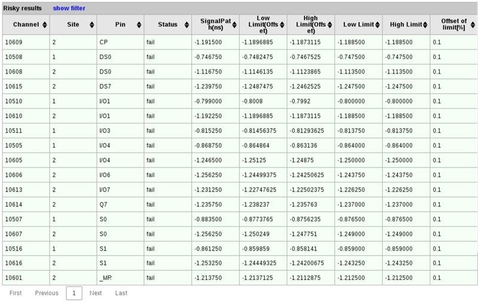
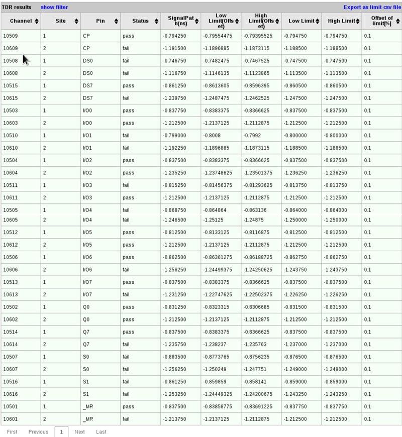
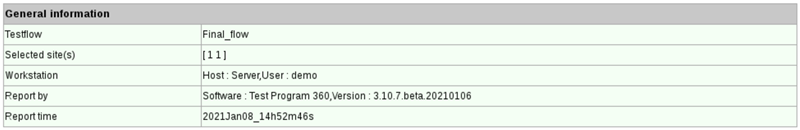

TDR measurement report
The TDR measurement report shows the general information for the TDR measurement, the results of the risky pins and all pins measured in the connectivity check.
- Risky results
- Lists the pins at risk of connectivity issue whose connectivity check results are
fail.

- TDR results
- Lists the connectivity check results of all the pins in the measurement.

You can click the Export as limit csv file to export the limit setup in this table as a CSV file.
This file is the same as that exported while setting up preferences for TDR measurements. You can reuse it by clicking the Import button in the Preferences window. See Setting up preferences for TDR measurements for more information.
- General information
- Displays the general information for the TDR measurement.

You can filter the tables by entering text in the fields below the column header; after you press Return, only rows will be displayed in which the column contains the filter value.
To show and hide the filters, respectively, click the Show Filter and Hide Filter links in the table title.
You can sort the table by clicking the upward-pointing and downward-pointing triangles in the column titles.
If more than one page of results was found, you can browse the pages using the controls below the table.
Functional changes
- Introduced in SmarTest 7.6.1